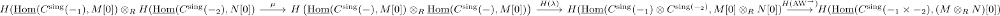

cross product of singular cohomology
Definition
Let $R$ be a commutative ring, $M,N$ \(R\)-modules. Then the cross product of singular cohomology is defined as natural transformation
\begin{align*}
\times: H^*(-;M) \otimes_R H^*(-;N) \mapsto& H^*(-_1 \times -_2, M \otimes_R N)
# \mathrm{Top} \times \mathrm{Top} \rightarrow& \mathrm{grAb} \\
\end{align*}
of functors given by composition of
and
- inner hom tensor map after homology
- alexander-whitney transformation after the hom chain complex functor and the homology functor
after applying the

where evaluating the definition of the tensor product results in
\begin{align*}
M[0] \otimes_R N[0] = (M \otimes_R N)[0]
\end{align*}